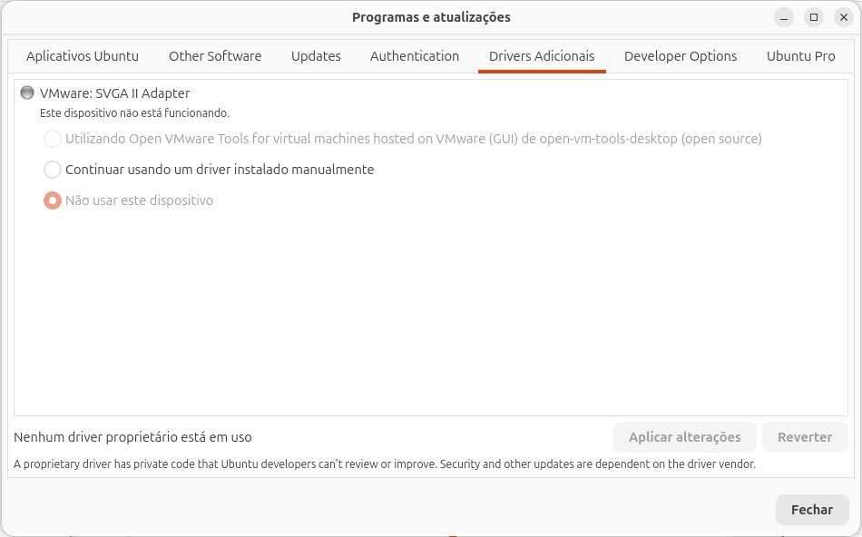

Ubuntu Wi-Fi que Não Funciona
Às vezes o problema não é a senha: o Wi-Fi nem aparece no menu, ou aparece desligado e não liga. Nesta aula você investiga o porquê, em ordem: o rádio está bloqueado? A placa foi reconhecida? Falta driver ou firmware? E o que fazer enquanto isso.
- As três peças que fazem o Wi-Fi funcionar: rádio, driver e firmware.
- Ver e destravar bloqueios com
rfkill(soft e hard). - Descobrir a placa com
ip link,lsusb,lspci -kedmesg. - Instalar drivers com Drivers Adicionais e
ubuntu-drivers, e firmware comlinux-firmware. - Lidar com adaptadores USB e ter um plano B para ficar online.
Esta aula continua a Wi-Fi. As saídas reais vêm do mesmo laboratório (Ubuntu 26.04 no modo de teste, numa máquina virtual com placas Wi-Fi virtuais; veja como foi feito). O que depende de hardware de verdade, como um adaptador USB ou um firmware faltando, não dá para reproduzir numa máquina virtual: essas saídas estão marcadas como ilustrativas.
Por que o Wi-Fi não funciona: três peças
Para o Wi-Fi aparecer no menu, três coisas precisam dar certo, nesta ordem:
| Peça | O que é | Quando falha, você vê… | Ferramenta |
|---|---|---|---|
| 1. Rádio | O transmissor da placa. Pode ser desligado por software ou por uma chave/tecla. | Wi-Fi desligado que não liga; não disponível no nmcli. | rfkill |
| 2. Driver | O programa do kernel que sabe conversar com aquele modelo de placa (um módulo do kernel). | Nenhuma placa wl… no ip link; nada de Wi-Fi no menu. | lspci -k, lsusb, ubuntu-drivers |
| 3. Firmware | Um programinha que roda dentro da placa. O driver o envia para a placa quando ela liga; ele fica em arquivos em /usr/lib/firmware/. | Placa reconhecida, mas não liga; mensagem "firmware … failed" no dmesg. | dmesg, linux-firmware |
Por cima das três está o NetworkManager, que só enxerga a placa quando o kernel já a reconheceu. Por isso, investigue de baixo para cima, como no roteiro abaixo.
Roteiro rápido
nmcli radioerfkill: o rádio está bloqueado? → rfkillip link: existe uma placawl…? Se existe, o problema é de conexão (senha, rede): volte para Wi-Fi.- Se não existe:
lspci -k(placa interna) oulsusb(adaptador USB) mostram o aparelho? → A placa não aparece sudo dmesg: o kernel reclamou de firmware? → Firmware- Placa sem driver: Drivers Adicionais ou
ubuntu-drivers. → Drivers
Wi-Fi bloqueado: rfkill
rfkill vem de radio frequency kill, "desligar a radiofrequência". É o interruptor geral dos rádios do computador: Wi-Fi, Bluetooth e modem.
Bloqueio soft × hard
| Soft (por software) | Hard (por hardware) | |
|---|---|---|
| Quem bloqueou | O sistema: menu, Configurações, nmcli radio wifi off, rfkill block. | Uma chave física na lateral do notebook, uma tecla de Fn tratada pelo próprio hardware, ou uma opção da BIOS/UEFI. |
| Quem destrava | O sistema: rfkill unblock wifi ou ligar o Wi-Fi no menu. | Só quem bloqueou: a chave, a tecla ou a BIOS. Nenhum comando resolve. |
Ver o estado: rfkill list e rfkill
$ rfkill list 0: phy0: Wireless LAN « a placa Wi-Fi número 0 Soft blocked: no Hard blocked: no 1: phy1: Wireless LAN « a segunda placa virtual (o "roteador" do laboratório) Soft blocked: no Hard blocked: no
Cada rádio tem um número (0, 1…), um nome (phy0 = physical device 0) e um tipo (Wireless LAN = Wi-Fi; num notebook costuma aparecer também Bluetooth). no nas duas linhas = nada bloqueado. Sem argumentos, o rfkill mostra o mesmo numa tabela, em português:
$ rfkill ID TYPE DEVICE SOFT HARD 0 wlan phy0 desbloqueado desbloqueado 1 wlan phy1 desbloqueado desbloqueado
Como fica um rádio bloqueado
Para ver o efeito, o laboratório bloqueou o Wi-Fi de propósito com rfkill block wifi (o mesmo que desligar o Wi-Fi no menu). Saídas reais, alguns segundos depois:
$ rfkill block wifi $ rfkill list 0: phy0: Wireless LAN Soft blocked: yes « bloqueado por software Hard blocked: no 1: phy1: Wireless LAN Soft blocked: yes Hard blocked: no $ nmcli radio WIFI-HW WIFI WWAN-HW WWAN habilitado desabilitado missing habilitado « WIFI desabilitado $ nmcli device status DEVICE TYPE STATE CONNECTION enp0s3 ethernet conectado netplan-enp0s3 lo loopback connected (externally) lo wlan0 wifi não disponível -- « a placa existe, mas o rádio está bloqueado p2p-dev-wlan0 wifi-p2p não disponível -- p2p-dev-wlan1 wifi-p2p não disponível -- veth-lab ethernet não gerenciável -- hwsim0 unknown não gerenciável -- wlan1 wifi não gerenciável -- « o "roteador" do laboratório $ nmcli device wifi list IN-USE BSSID SSID MODE CHAN RATE SIGNAL BARS SECURITY « nenhuma rede IN-USE BSSID SSID MODE CHAN RATE SIGNAL BARS SECURITY « uma tabela por placa (o laboratório tinha duas)
Repare na cadeia: o rfkill diz Soft blocked: yes, o nmcli radio diz WIFI desabilitado, a placa fica não disponível e a lista de redes vem vazia. No menu do GNOME, o bloco Wi-Fi aparece desligado.
Destravar: rfkill unblock
- rfkill
- O programa.
- unblock
- Destravar (o contrário é
block). - wifi
- Quais rádios:
wifi(ouwlan),bluetooth,wwan(modem),all(todos) ou o número doID.
$ rfkill unblock wifi $ nmcli radio WIFI-HW WIFI WWAN-HW WWAN habilitado habilitado missing habilitado $ nmcli device status | grep wlan0 wlan0 wifi desconectado -- « de volta: pronta para conectar p2p-dev-wlan0 wifi-p2p desconectado --
O rfkill não imprime nada quando dá certo. Sem sudo ele funcionou porque, no Ubuntu Desktop, quem está sentado na frente do computador pode ligar e desligar os rádios. Para mexer em um rádio só, use o número da coluna ID:
$ rfkill block 0 $ rfkill ID TYPE DEVICE SOFT HARD 0 wlan phy0 bloqueado desbloqueado « só o 0 foi bloqueado 1 wlan phy1 desbloqueado desbloqueado $ rfkill unblock all
Bloqueio hard: a chave ou a tecla
Uma placa virtual não tem chave física, então esta saída é ilustrativa:
$ rfkill list 0: phy0: Wireless LAN Soft blocked: no Hard blocked: yes « travado pelo hardware 1: hci0: Bluetooth Soft blocked: no Hard blocked: no $ rfkill unblock wifi $ rfkill list 0 0: phy0: Wireless LAN Soft blocked: no Hard blocked: yes « continua: nenhum comando destrava o hard
Com Hard blocked: yes, o comando roda sem erro e nada muda. Procure, nesta ordem:
- Uma chave na lateral ou na frente do notebook, com o desenho de uma antena.
- A tecla de avião ou de antena, geralmente junto com Fn (Fn+F2, Fn+F12… muda de marca para marca).
- A BIOS/UEFI: algumas têm uma opção para desligar o Wi-Fi ("Wireless", "WLAN").
A placa não aparece
Se o Wi-Fi nem aparece no menu, comece perguntando ao kernel quais placas de rede ele conhece. Placas Wi-Fi têm nomes que começam com wl (de wireless): wlp2s0 para placas internas, wlx seguido do endereço físico para adaptadores USB. No laboratório, wlan0.
$ ip -br link lo UNKNOWN 00:00:00:00:00:00 <LOOPBACK,UP,LOWER_UP> enp0s3 UP 08:00:27:3b:f9:54 <BROADCAST,MULTICAST,UP,LOWER_UP> wlan0 DOWN 02:00:00:00:00:00 <NO-CARRIER,BROADCAST,MULTICAST,UP> « existe uma placa Wi-Fi wlan1 DOWN 02:00:00:00:01:00 <NO-CARRIER,BROADCAST,MULTICAST,UP> « a placa-roteador do laboratório hwsim0 DOWN 12:00:00:00:00:00 <BROADCAST,MULTICAST>
Existe uma linha wl…? Então o driver está carregado, e o problema é bloqueio (rfkill) ou conexão (Wi-Fi). Não existe? O kernel não sabe que a placa está lá, ou não tem driver para ela. Siga em frente.
Adaptador USB: lsusb
lsusb lista tudo o que está ligado nas portas USB, tenha driver ou não. Na máquina virtual do laboratório, a saída real só mostra o "mouse" do VirtualBox:
$ lsusb Bus 001 Device 001: ID 1d6b:0001 Linux Foundation 1.1 root hub Bus 001 Device 002: ID 80ee:0021 VirtualBox USB Tablet
Com um adaptador Wi-Fi USB espetado, aparece uma linha a mais (ilustrativo):
$ lsusb Bus 001 Device 001: ID 1d6b:0002 Linux Foundation 2.0 root hub Bus 001 Device 004: ID 0bda:c811 Realtek Semiconductor Corp. 802.11ac NIC « o adaptador Bus 001 Device 003: ID 046d:c52b Logitech, Inc. Unifying Receiver
O número 0bda:c811 é a identidade do aparelho: 0bda é o fabricante (Realtek) e c811 é o modelo. A marca impressa na caixa do adaptador importa pouco; o que decide o driver é o chip de dentro, e este número o identifica. Se o adaptador nem aparece no lsusb, troque de porta USB ou de cabo extensor; se continuar sumido, o problema é físico.
Placa interna: lspci -k
lspci lista o que está ligado ao barramento PCI (veja Informações do Sistema), e -k mostra o driver de cada aparelho. A máquina virtual só tem a placa de cabo (saída real, filtrada):
$ lspci -k | grep -A3 -i -E "network|ethernet" 00:03.0 Ethernet controller: Intel Corporation 82540EM Gigabit Ethernet Controller (rev 02) Subsystem: Intel Corporation PRO/1000 MT Desktop Adapter Kernel driver in use: e1000 « o driver em uso Kernel modules: e1000
As placas Wi-Fi do laboratório são virtuais (do módulo mac80211_hwsim) e não estão em nenhum barramento; por isso não aparecem aqui. Num notebook com Wi-Fi interno, a placa aparece como Network controller (ilustrativo):
$ lspci -k | grep -A3 -i network 02:00.0 Network controller: Intel Corporation Wi-Fi 6 AX201 (rev 20) Subsystem: Intel Corporation Wi-Fi 6 AX201 Kernel driver in use: iwlwifi « tem driver: tudo certo Kernel modules: iwlwifi
E assim fica uma placa sem driver (ilustrativo): falta a linha Kernel driver in use.
$ lspci -k | grep -A3 -i network 03:00.0 Network controller: Broadcom Inc. and subsidiaries BCM4360 802.11ac Wireless Network Adapter (rev 03) Subsystem: Apple Inc. BCM4360 802.11ac Wireless Network Adapter Kernel modules: bcma « sem "Kernel driver in use": ninguém está cuidando da placa
Qual driver a placa usa
Quando a placa aparece no ip link, o NetworkManager diz o driver dela (saída real; no laboratório, o driver das placas virtuais):
$ nmcli -f GENERAL.DEVICE,GENERAL.TYPE,GENERAL.DRIVER device show wlan0 GENERAL.DEVICE: wlan0 GENERAL.TYPE: wifi GENERAL.DRIVER: mac80211_hwsim « num notebook: iwlwifi, rtw88_8821cu, mt7921e… $ lsmod | grep 80211 mac80211_hwsim 139264 0 mac80211 1933312 1 mac80211_hwsim cfg80211 1536000 2 mac80211_hwsim,mac80211
lsmod lista os módulos carregados. cfg80211 e mac80211 são a base do Wi-Fi no Linux; o driver da placa (aqui mac80211_hwsim) se apoia neles. O nome do driver é o que você procura na internet junto com a mensagem de erro.
O kernel reclamou de algo? dmesg
dmesg mostra as mensagens do kernel desde que o computador ligou. Para ver só erros e avisos:
$ sudo dmesg --level=err,warn
Na máquina virtual não houve nenhuma mensagem sobre Wi-Fi. Num computador com o problema, o sinal típico de firmware faltando é este (ilustrativo):
$ sudo dmesg | grep -i firmware [ 6.412233] iwlwifi 0000:02:00.0: Direct firmware load for iwlwifi-so-a0-gf-a0-89.ucode failed with error -2 [ 6.412290] iwlwifi 0000:02:00.0: no suitable firmware found!
Direct firmware load for … failed with error -2 = "a carga do firmware … falhou, erro −2", isto é, arquivo não encontrado. O nome do arquivo que faltou vem logo depois de for.
Firmware: linux-firmware
Os arquivos de firmware vêm no pacote linux-firmware, instalado por padrão no Ubuntu. No 26.04 ele é um "pacote de pacotes": puxa um pacote por fabricante. Saídas reais:
$ apt-cache policy linux-firmware
linux-firmware:
Instalado: 20260319.git217ca6e4.1ubuntu
Candidato: 20260319.git217ca6e4.1ubuntu
Tabela de versão:
*** 20260319.git217ca6e4.1ubuntu 500
500 http://archive.ubuntu.com/ubuntu resolute/main amd64 Packages
500 http://archive.ubuntu.com/ubuntu resolute/main i386 Packages
100 /var/lib/dpkg/status
$ apt-cache depends linux-firmware
linux-firmware
Depende: linux-firmware-amd-graphics
Depende: linux-firmware-amd-misc
Depende: linux-firmware-broadcom-wireless « Wi-Fi Broadcom
Depende: linux-firmware-intel-graphics
Depende: linux-firmware-intel-misc
Depende: linux-firmware-intel-wireless « Wi-Fi Intel
Depende: linux-firmware-marvell-prestera
Depende: linux-firmware-marvell-wireless
Depende: linux-firmware-mediatek « Wi-Fi MediaTek
Depende: linux-firmware-mellanox-spectrum
Depende: linux-firmware-misc
Depende: linux-firmware-netronome
Depende: linux-firmware-nvidia-graphics
Depende: linux-firmware-qlogic
Depende: linux-firmware-qualcomm-graphics
Depende: linux-firmware-qualcomm-misc
Depende: linux-firmware-qualcomm-wireless « Wi-Fi Qualcomm/Atheros
Depende: linux-firmware-realtek « Wi-Fi Realtek
Recomenda: firmware-sof-signed
Na maioria dos casos o firmware já está lá. Quando o dmesg reclama, as causas comuns são:
| Causa | O que fazer |
|---|---|
| Placa mais nova que o sistema | Atualize: sudo apt update && sudo apt upgrade traz kernel e firmware novos (veja Atualizações). Sem internet no Wi-Fi, use o plano B. |
| Algum pacote de firmware foi removido | Reinstale o do fabricante, por exemplo sudo apt install --reinstall linux-firmware-intel-wireless. |
| O firmware não existe em nenhum pacote | Raro: o fabricante não liberou o arquivo. Procure o nome do arquivo que faltou junto com o modelo da placa. |
Depois de instalar firmware, reinicie o computador: o driver só pede o arquivo quando a placa liga.
Drivers: Drivers Adicionais e ubuntu-drivers
Quase todas as placas Wi-Fi funcionam com drivers que já vêm no kernel do Ubuntu. Algumas, principalmente modelos Broadcom mais antigos, precisam de um driver proprietário (de código fechado), que o Ubuntu não instala sozinho. Para elas existem duas ferramentas, que fazem a mesma coisa.
Pela interface: Drivers Adicionais
Fica em Programas e atualizações → Drivers Adicionais. No Ubuntu 26.04 do laboratório, essa janela não vem instalada (nem no modo de teste, nem na lista de pacotes que o instalador copia para o disco). Instale-a com sudo apt install software-properties-gtk. Captura real (na máquina virtual, o único aparelho listado é a placa de vídeo virtual):

broadcom-sta-dkms; escolha-a e clique em Aplicar alterações.Pelo terminal: ubuntu-drivers
ubuntu-drivers list mostra os pacotes de driver que servem para este computador (saída real):
$ ubuntu-drivers list Warning: Your running kernel (7.0.0-14-generic) is outdated. A newer kernel (7.0.0-38-generic) is available in the Ubuntu archives. Please run 'sudo apt update && sudo apt upgrade' to update your system. open-vm-tools-desktop
A primeira linha é um aviso: "o kernel em uso está desatualizado; rode sudo apt update && sudo apt upgrade". Ela aparece porque o modo de teste do pendrive usa o kernel da ISO. A segunda é a resposta: na máquina virtual, o único driver recomendado é o open-vm-tools-desktop. Num notebook com Wi-Fi Broadcom, apareceria broadcom-sta-dkms. Para ver qual aparelho pede cada driver:
$ ubuntu-drivers devices == /sys/devices/pci0000:00/0000:00:02.0 == modalias : pci:v000015ADd00000405sv000015ADsd00000405bc03sc00i00 vendor : VMware model : SVGA II Adapter manual_install: True driver : open-vm-tools-desktop - distro free
Para instalar os drivers recomendados, use install:
- sudo
- Instalar pacotes exige administrador.
- ubuntu-drivers
- A ferramenta de drivers do Ubuntu.
- install
- Instala os drivers que o
listmostrou. Você também pode dar o nome de um:sudo ubuntu-drivers install broadcom-sta-dkms.
$ sudo ubuntu-drivers install
Ele chama o apt e mostra a instalação dos pacotes. No laboratório, instalou o open-vm-tools-desktop. Depois, reinicie.
Muitos tutoriais mandam usar sudo ubuntu-drivers autoinstall e instalar o pacote bcmwl-kernel-source. No Ubuntu 26.04, nenhum dos dois existe mais (saídas reais):
$ ubuntu-drivers autoinstall Usage: ubuntu-drivers [OPTIONS] COMMAND [ARGS]... Try 'ubuntu-drivers -h' for help. Error: No such command 'autoinstall'. $ apt-cache policy bcmwl-kernel-source $ sudo apt-get install bcmwl-kernel-source Lendo listas de pacotes... Construindo árvore de dependências... Lendo informação de estado... E: Não é possível encontrar o pacote bcmwl-kernel-source
"Não existe o comando autoinstall": use install. O apt-cache policy sem nenhuma resposta e o "não é possível encontrar o pacote" dizem que o pacote não existe: o driver Broadcom agora se chama broadcom-sta-dkms.
O driver Broadcom: broadcom-sta-dkms
$ apt show broadcom-sta-dkms 2>/dev/null | grep -E "^(Package|Version|Section|Depends|Download-Size|APT-Sources|Description)" Package: broadcom-sta-dkms Version: 6.30.223.271-29ubuntu1 Section: non-free/kernel « não livre: código fechado Depends: dkms (>= 2.1.0.0) « precisa do DKMS (explicado abaixo) Download-Size: 1.734 kB APT-Sources: file:/cdrom resolute/restricted amd64 Packages « está dentro do pendrive de instalação! Description: dkms source for the Broadcom STA Wireless driver
A linha APT-Sources: file:/cdrom é a mais importante: o driver Broadcom vem dentro da ISO. Por isso o instalador consegue instalá-lo mesmo sem internet, se você marcar "Instalar drivers de terceiros para Wi-Fi e placas gráficas" (veja Instalação). É o jeito mais fácil de resolver um notebook Broadcom: marcar essa caixa durante a instalação.
O que é DKMS
Um driver que não vem no kernel precisa ser compilado para cada versão do kernel. O DKMS (Dynamic Kernel Module Support) faz isso sozinho: toda vez que uma atualização instala um kernel novo, ele recompila o driver. Pacotes terminados em -dkms trazem o código-fonte e usam o DKMS. Duas consequências práticas:
- A instalação demora um pouco mais (o driver é compilado na hora) e precisa dos headers do kernel, que o
aptinstala junto. - Com o Secure Boot ligado, o Ubuntu pede para você criar uma senha durante a instalação do driver e, no próximo boot, mostra uma tela azul (MOK management) para você confirmar a chave com essa senha (Enroll MOK). Sem essa confirmação, o kernel recusa o driver. (Descrição ilustrativa: a máquina virtual não tinha Secure Boot.)
Adaptadores Wi-Fi USB (Realtek, MediaTek…)
Adaptadores USB são a solução barata para um computador sem Wi-Fi, ou com uma placa sem driver. Antes de comprar, saiba que existem dois tipos:
| Driver no kernel | Driver de fora (DKMS) | |
|---|---|---|
| Instalação | Nenhuma: espetou, funcionou. | Baixar o código de um projeto, compilar com DKMS, assinar para o Secure Boot. |
| Atualizações do Ubuntu | Continua funcionando. | Pode quebrar quando chega um kernel novo. |
| Exemplos de drivers | rtw88, rtw89, rtl8xxxu (Realtek); mt76 (MediaTek) | Projetos no GitHub para chips sem suporte no kernel |
O kernel do Ubuntu 26.04 já traz vários drivers de adaptadores USB. O modinfo -n mostra o arquivo de um módulo, se ele existir (saídas reais):
$ modinfo -n rtw88_8821cu /lib/modules/7.0.0-14-generic/kernel/drivers/net/wireless/realtek/rtw88/rtw88_8821cu.ko.zst $ modinfo -n rtw89_8852bu /lib/modules/7.0.0-14-generic/kernel/drivers/net/wireless/realtek/rtw89/rtw89_8852bu.ko.zst $ modinfo -n mt7921u /lib/modules/7.0.0-14-generic/kernel/drivers/net/wireless/mediatek/mt76/mt7921/mt7921u.ko.zst $ modinfo -n r8188eu modinfo: ERROR: Module r8188eu not found. « este driver antigo não existe mais no kernel
Já os drivers "de fora" não estão nos repositórios do Ubuntu: a busca real por pacotes rtl88… não encontra nada.
$ apt-cache search --names-only rtl88 « não imprime nada: nenhum pacote
Como escolher e diagnosticar
- Espete o adaptador e rode
lsusb. Anote o ID (por exemplo0bda:c811). - Rode
ip -br link. Apareceu uma placawlx…? Então o kernel tem driver: conecte normalmente (Wi-Fi). - Não apareceu? Rode
sudo dmesg | tail -20logo depois de espetar: o kernel mostra o que reconheceu e se faltou firmware. - Pesquise o ID junto com a palavra "linux" para descobrir o chip e o driver. Se o driver estiver no kernel, atualizar o Ubuntu costuma resolver.
- Para comprar: procure um adaptador cujo chip tenha driver no kernel. Na dúvida, prefira o que tem driver no kernel ao mais rápido.
Um driver de fora roda dentro do kernel, com poder total sobre o computador. Use só projetos conhecidos, leia o README e prefira os que usam DKMS (que recompila sozinho a cada kernel). Precisa de dkms, build-essential e dos headers do kernel. Se o Wi-Fi sumir depois de uma atualização, inicie o kernel anterior pelo GRUB (veja Boot e GRUB) e reinstale o driver.
Plano B: ficar online sem o Wi-Fi
Para instalar driver ou firmware você precisa de internet, e o Wi-Fi é justamente o que não funciona. Saídas, da mais fácil para a mais difícil:
- Celular pelo cabo USB (ancoragem USB): o Ubuntu reconhece como rede cabeada, sem instalar nada. Passo a passo em Celular e Modem 4G.
- Cabo de rede direto no roteador, se o computador tiver a porta.
- Um adaptador USB com driver no kernel, mesmo emprestado, só para instalar o driver da placa interna.
- O próprio pendrive de instalação: como visto acima, o
broadcom-sta-dkmsestá na ISO. Reinstalar marcando "drivers de terceiros" resolve o caso Broadcom sem internet.
Formas diferentes de investigar
| Pergunta | Comando | Resposta boa |
|---|---|---|
| O rádio está ligado? | rfkill ou nmcli radio | desbloqueado / habilitado |
| O kernel criou a placa? | ip -br link | Uma linha wl… |
| O aparelho está ligado ao computador? | lsusb (USB) ou lspci (interna) | O aparelho aparece |
| Tem driver? | lspci -k, nmcli -f GENERAL.DRIVER device show | Kernel driver in use preenchido |
| Faltou firmware? | sudo dmesg | grep -i firmware | Nenhuma linha "failed" |
| Existe driver extra? | ubuntu-drivers list ou Drivers Adicionais | A lista mostra o pacote |
Quando não funciona
O que aconteceu: o bloqueio é do hardware (chave, tecla ou BIOS). O rfkill unblock roda sem erro, mas não muda nada.
Como resolver: procure a chave física ou a tecla de antena/avião com Fn, e confira a BIOS/UEFI. Depois, rode rfkill list de novo.
O que aconteceu: geralmente um driver de fora (DKMS) que não compilou para o kernel novo, ou uma mudança no kernel.
Como confirmar: no menu do GRUB, escolha o kernel anterior (Boot e GRUB). Se o Wi-Fi volta, o problema é o driver com o kernel novo.
Como resolver: com o kernel anterior, rode sudo apt update && sudo apt upgrade e reinstale o driver (sudo ubuntu-drivers install ou o pacote -dkms). Reinicie no kernel novo.
O que aconteceu: o driver existe, mas o arquivo de firmware da placa não está em /usr/lib/firmware/.
Como resolver: atualize o sistema (por cabo ou celular) para receber o linux-firmware mais novo, ou reinstale o pacote de firmware do fabricante. Reinicie.
O que aconteceu: com o Secure Boot ligado, a chave do driver não foi confirmada na tela azul do MOK no boot seguinte, então o kernel recusou o módulo. Ou o computador ainda não foi reiniciado.
Como resolver: reinicie e, na tela azul, escolha Enroll MOK e digite a senha criada na instalação. Se a tela passou sem você ver, reinstale o pacote (sudo apt install --reinstall broadcom-sta-dkms) para o Ubuntu pedir de novo.
O que aconteceu: o computador não está vendo o aparelho: porta USB com defeito, adaptador queimado, ou a placa interna desligada na BIOS.
Como resolver: teste outra porta e outro computador; confira a BIOS/UEFI. Não é algo que um driver resolva.
Referência
| Comando | Faz |
|---|---|
rfkill / rfkill list | Mostra os bloqueios dos rádios |
rfkill unblock wifi|all|ID | Destrava o bloqueio soft |
rfkill block wifi|ID | Bloqueia (desliga) o rádio |
ip -br link | Placas que o kernel criou |
lsusb | Aparelhos USB e seus IDs |
lspci -k | Aparelhos PCI e o driver de cada um |
lsmod / modinfo -n MÓDULO | Módulos carregados / onde fica um módulo |
sudo dmesg --level=err,warn | Erros e avisos do kernel |
ubuntu-drivers list / devices | Drivers que servem para este computador |
sudo ubuntu-drivers install | Instala os drivers recomendados |
sudo apt install --reinstall linux-firmware-FABRICANTE | Reinstala o firmware de um fabricante |
Exercícios
1. Destravar o Wi-Fi
O rfkill list mostra Soft blocked: yes no Wi-Fi. Complete:
2. Ver o driver
Complete para listar os aparelhos PCI com o driver de cada um:
3. Instalar os drivers recomendados
Complete o comando que substitui o antigo autoinstall:
4. rfkill list mostra Hard blocked: yes. O que resolve?
5. Num notebook com Wi-Fi Broadcom, sem internet, qual é o jeito mais simples de conseguir o driver?
6. Em lspci -k, a placa Wi-Fi não tem a linha Kernel driver in use. O que isso indica?
Resumo
- Wi-Fi depende de rádio (rfkill), driver (módulo do kernel) e firmware (arquivo em
/usr/lib/firmware/). Investigue nessa ordem. - Bloqueio soft:
rfkill unblock wifi. Bloqueio hard: chave, tecla Fn ou BIOS. - Sem placa
wl…noip -br link:lsusb/lspci -kpara achar o chip,sudo dmesgpara ver o firmware. - Drivers extras: Drivers Adicionais ou
sudo ubuntu-drivers install. No 26.04 não háautoinstallnembcmwl-kernel-source: o Broadcom ébroadcom-sta-dkms, e está na ISO. - Plano B: internet do celular pelo cabo USB.